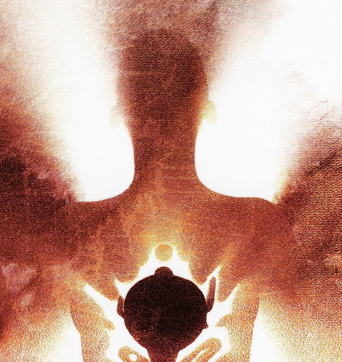
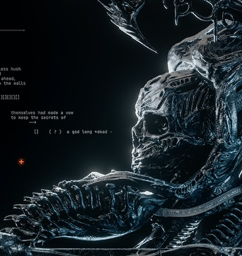
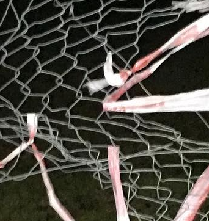
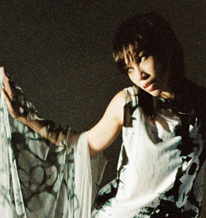
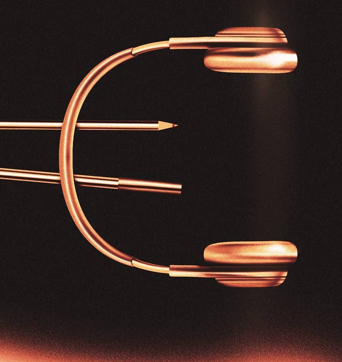
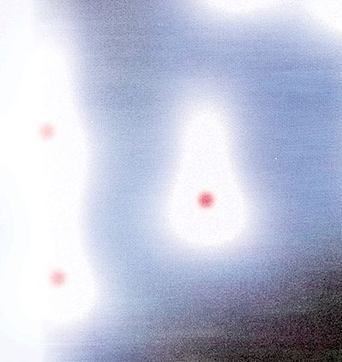
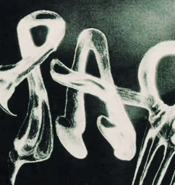
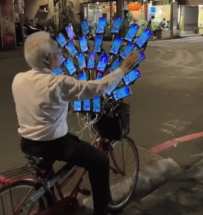
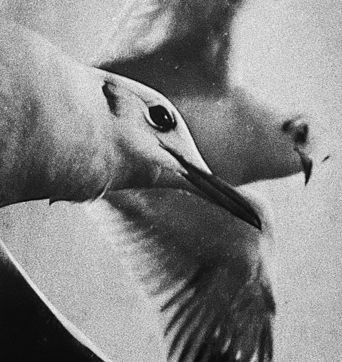
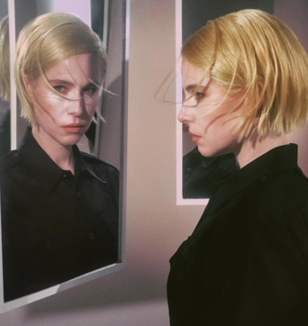

Hello There is more to life than this life.
Kieran Hebden, best known as Four Tet, has revived his symbol-driven ⣎⡇ꉺლ༽இ•̛)ྀ◞ ༎ຶ ༽ৣৢ؞ৢ؞ؖ ꉺლ alias for two new tracks.










⣎⡇ꉺლ༽இ•̛)ྀ◞ ༎ຶ ༽ৣৢ؞ৢ؞ؖ ꉺლ.